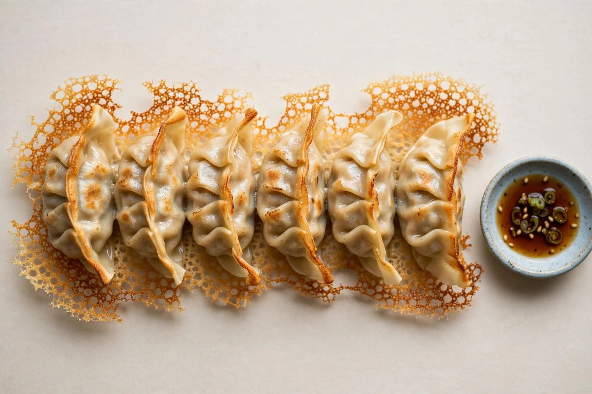

What is gyoza?
Pan-fried dumplings with a pork-and-cabbage filling — crispy golden bottom, steamed-soft top. In Japan they're usually a side dish (with ramen, with beer), not the main event.
How they differ from Chinese jiaozi
- Thinner skin, smaller size — Japanese gyoza are delicate; jiaozi are heartier.
- Pan-fried is the default （焼き餃子 yaki-gyoza). Boiled （水餃子 sui-gyoza) exists but is less common.
- Garlic-forward filling — Japanese gyoza use more garlic and ginger than most Chinese versions.
The dipping sauce (you make it)
Nothing comes pre-mixed. Combine at the table: soy sauce + vinegar + chili oil (la-yu). The Japanese ratio leans heavy on vinegar — try 2 parts vinegar, 1 part soy, a drop of chili oil.
Styles worth seeking
- 浜松 Hamamatsu style — served with bean sprouts and a crispy lacy "skirt" （羽根 hane) connecting the dumplings.
- 宇都宮 Utsunomiya style — from Japan's self-declared gyoza capital; dozens of specialty shops.
- ひとくち Hitokuchi — tiny one-bite gyoza, a bar-snack style.
Allergens and dietary check: is gyoza safe for you?
What a typical gyoza contains. Recipes vary by shop, so use this to know what to ask, then confirm with the staff. Tap an allergen for its Japanese restaurant card.
| Allergen / diet | Contains? | Why |
|---|---|---|
| Wheat / gluten | Yes | The wrapper is wheat dough; soy sauce dip contains wheat. |
| Soy | Yes | Soy sauce in the filling and the dip. |
| Sesame | Often | Sesame oil in the filling or for frying. |
| Pork | Yes | Standard filling is minced pork. |
| Shellfish | Sometimes | Shrimp gyoza (えび餃子) exist; ask about shared fillings. |
| Egg | Rarely | Some fillings use egg as a binder. |
| Dairy | Rarely | Not a usual ingredient. |
| Vegetarian? | No | Ask for 野菜餃子 (yasai gyoza), and check the filling and frying fat. |
Several allergies? Build one card with our printable Japanese allergy card. Also see halal and vegetarian and vegan cards. This is travel information, not medical advice.
Common questions
Is there a vegetarian gyoza?
Some shops offer vegetable gyoza （野菜餃子 yasai gyoza), but the default is always pork — ask before assuming.
Can gyoza be a full meal?
At specialty shops, yes — order two plates plus rice. At ramen shops, it's a side.
Is gyoza gluten-free?
No. The wrapper is made from wheat flour, and the soy sauce dip contains wheat. Rice-paper gyoza are very rare in Japan.
Does gyoza contain pork?
Standard Japanese gyoza is filled with minced pork, cabbage, garlic and ginger. Chicken, shrimp and vegetable versions exist at some shops, but always ask.
Does gyoza have sesame?
Often. Many recipes add sesame oil to the filling or use it for frying. If you have a sesame allergy, ask “ごま油を使っていますか？”.
FAQ
What is Japanese gyoza?
Japanese gyoza are pan-fried dumplings filled with minced pork, cabbage, garlic, and ginger. They're smaller and thinner-skinned than Chinese jiaozi, usually served as a side dish with ramen rather than a main.
How do you eat gyoza?
Dip in a mix of soy sauce, vinegar, and chili oil (la-yu) — all provided at the table. The standard ratio is more vinegar than soy.